Next: Using Single Ion Module Up: McPhase USERS MANUAL Previous: Running McPhase and McDisp Contents Index
In this section we discuss, how lattice dynamics may be considered in the framework of the Hamiltonian (213). We will see that this corresponds to a system of coupled Einstein oscillators. One such oscillator can be modelled by setting up a sipf file with the module phonon. Coupling has to be done in mcdisp.j. Rephrasing lattice dynamics in this way allows to couple phonons to the crystal field.
A three dimensional Einstein oscillator (for atom  ) in a solid can be described by
the following Hamiltonian
) in a solid can be described by
the following Hamiltonian
Here
is the dimensionless displacement vector
(
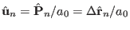,
with the Bohr radius 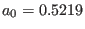 Å),  the
mass of the atom
the
mass of the atom  ,
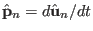 the conjugate momentum to
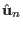 and
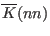 the Matrix describing the restoring force.
,
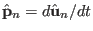 the conjugate momentum to
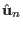 and
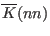 the Matrix describing the restoring force.
Coupling such oscillators leads to the Hamiltonian
| 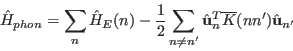 | (66) |
Note that our coupling constants 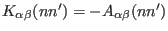, where 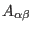 are the second-order derivatives of the potenatial energy as defined e.g. in [29, page 99].
In a mean field type of theory the phonon single ion module has thus to solve the Hamiltonian
Here the force corresponds to the exchange field
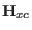 and
to
the general operator
 and
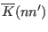 to
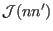 of equation (213),
respectively. The single ion Hamiltonian (70) can be solved by transforming
it to normal coordinates (main axis of the Einstein oscillator) using the transformation
matrix 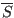, which diagonalises
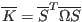:
and
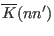 to
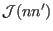 of equation (213),
respectively. The single ion Hamiltonian (70) can be solved by transforming
it to normal coordinates (main axis of the Einstein oscillator) using the transformation
matrix 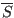, which diagonalises
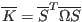:
| 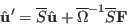 | (68) |
Due to the action of the force the equilibrium position of the oscillator is 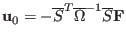 (it is the task of the function Icalc to return this equilibrium position), the energies correspond to the three elements of the diagonal matrix , i.e. 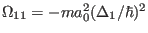, , 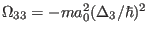. In order to run mcdisp we have to calculate the transition matrix elements:
The single ion susceptibility for such a transition, e.g. 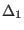 - corresponds to
| 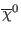 | 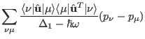 | (70) | |
| 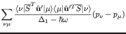 | (71) |
| 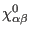 | 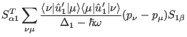 | (72) | |
| 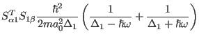 | (73) |
In order to derive the last result we had to express 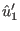 in terms of ladder operators 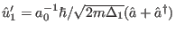 and apply 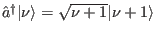, 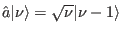 and 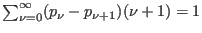, 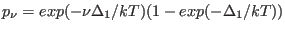. This shows that the single ion susceptibility of our atom can be written as a sum of three effective transitions (with temperature independent susceptibility)
| 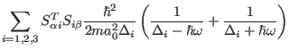 | (74) |
Thus the module phonon has to provide in it's function du1calc these three transitions (=number of transitions).